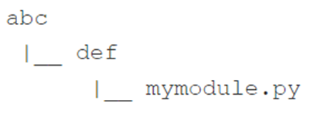

Code
# Тут має бути Ваш код
'''Файл module.py ''''Файл module.py 'Мета: навчитися імпортувати, користуватися, створювати модулі та пакети. Навчитися користуватися “сирною крамницею” PyPi та менеджером пакетів pip
Створити модуль module.py та файл main.py, структура яких описана у лекції 9, повторишви кроки 1-10.
# Тут має бути Ваш код
'''Файл module.py ''''Файл module.py '# Тут має бути Ваш код
'''Файл main.py ''''Файл main.py 'Створити пакет extra, структура яких описана у лекції 9, повторишви кроки 1-7, завантаживши потрібні файли за навкденими нижче посиланнями:
Modules and Packages ZIP file.zip
# Тут має бути Ваш код
'''Файл main2.py ''''Файл main2.py 'pipСписок основних команд pip:
pip help operation – показує короткий опис pip;pip list – показує список встановлених пакетів;pip show package_name – показує інформацію про package_name, включаючи залежність пакета;pip search anystring – виконує пошук у каталогах PyPI, щоб знайти пакети, імена яких містять anystring;pip install name – встановлює name у масштабі всієї системи (очікуйте проблем, якщо у Вас немає прав адміністратора);pip install –user name – встановлює name лише для Вас; жоден інший користувач платформи не зможе його використовувати;pip install -U name – оновлює раніше встановлений пакет;pip uninstall name – видаляє встановлений раніше пакет.За допомогою менеджера пакетів pip:
pygamepygamepygame# import pygame
# run = True
# width = 400
# height = 100
# pygame.init()
# screen = pygame.display.set_mode((width, height))
# font = pygame.font.SysFont(None, 48)
# text = font.render("Welcome to pygame", True, (255, 255, 255))
# screen.blit(text, ((width - text.get_width()) // 2, (height - text.get_height()) // 2))
# pygame.display.flip()
# while run:
# for event in pygame.event.get():
# if event.type == pygame.QUIT\
# or event.type == pygame.MOUSEBUTTONUP\
# or event.type == pygame.KEYUP:
# run = FalseВи хочете заборонити користувачеві модуля запускати ваш код як звичайний скрипт. Як досягти такого ефекту? Написати код.
Деякі додаткові та необхідні пакети зберігаються в каталозі D:. Напишіть код, який забезпечує перегляд каталогу Python для пошуку всіх модулів. Написати код.
Каталог, згаданий у попередній вправі, містить піддерево наступної структури: 
Припускаючи, що D:\Python\Project\Modules був успішно доданий до списку sys.path, напишіть директиву імпорту, що дозволяє використовувати всі сутності з mymodule.